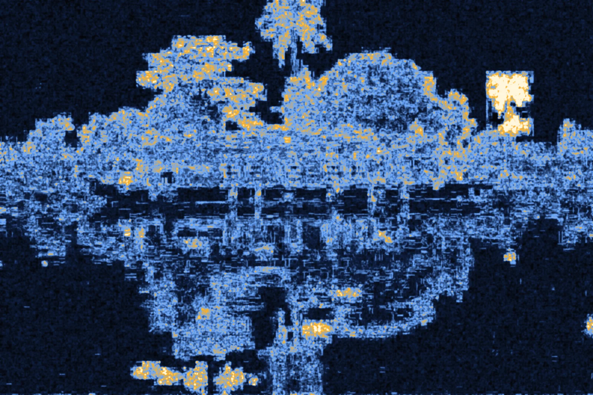
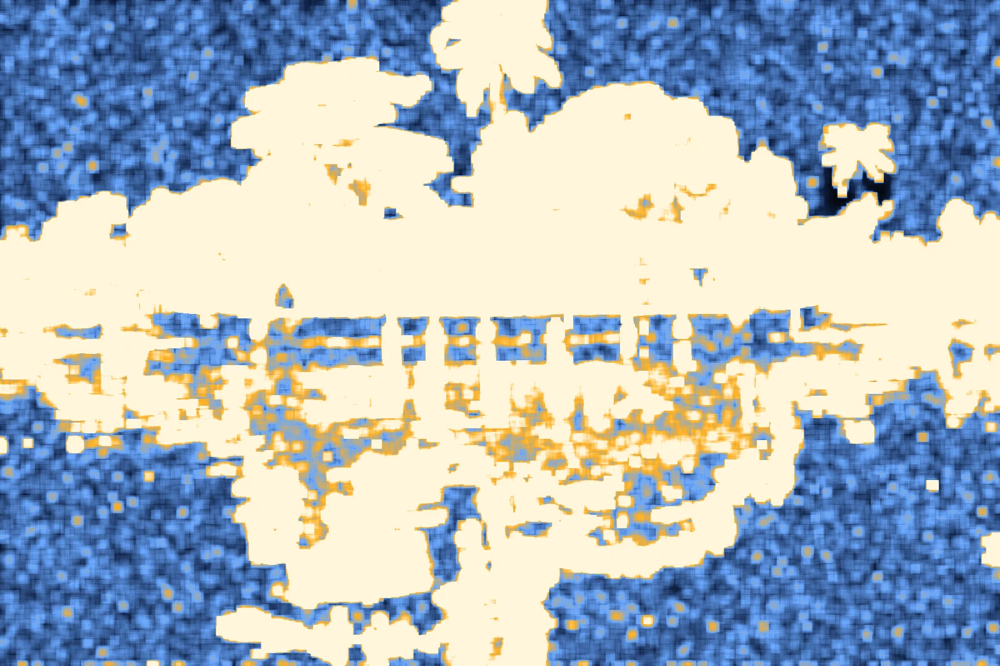

- Location
- Hong Kong
- When
- January 2024
- Method
- Deepfaked CFO and staff on a video call
- Transfers
- 15 transfers to 5 bank accounts
- Police
- “Everyone [he saw] was fake.”
INFINIA 2026 · Intelligence Beyond Humans
Seeing is no longer believing.
AI can now forge a face, a voice, a whole video call. VERITAS is the lab we built to catch it — and the science of how.
01 The Threat
A video call with the boss.
Everyone on it was fake.
In January 2024 a finance employee at the engineering firm Arup in Hong Kong joined a video conference with the company’s CFO and several colleagues. He made the transfers they asked for. Every other face and voice on that call was a deepfake, pre-recorded from the executives’ public online videos. 1
01·2 Cloned voices
It sounded exactly like him.
He never said it.
January 2024, New Hampshire, USA: voters received robocalls in a cloned voice of the U.S. President, telling them not to vote in the primary election. In February the U.S. Federal Communications Commission ruled that AI-generated voices count as “artificial” under its robocall law; in May it proposed a US$6 million fine against the consultant behind the calls (finalised September 2024). 2
01·3 The scale
Deepfakes detected, 2022 → 2023
Rise in deepfake incidents caught by one global identity-verification company in a single year.
VENDOR DATASumsub Identity Fraud Report 2023 4One deepfake attempt, every…
Average rate of deepfake attacks on identity checks seen in 2024 by one verification provider.
VENDOR DATAEntrust / Onfido 2025 Identity Fraud Report 5Projected losses by 2027
Deloitte projects that generative AI could push U.S. fraud losses to $40 billion, from $12.3 billion in 2023 (its high-adoption scenario).
PROJECTIONDeloitte Center for Financial Services, 2024 6The danger isn’t that fakes exist.
It’s that our eyes have stopped being evidence.
02 How fakes are made
To catch a forger,
first learn to forge.
A Generative Adversarial Network Goodfellow et al., 2014 8
Two networks. One forges, one judges. Both get better.
The generator G turns random noise z into an image. The discriminator D sees real photos and G’s fakes and guesses which are real. Each learns from the other’s mistakes — until D can only guess, D = ½, because the fakes look statistically real.
minG maxD V(D, G) =
𝔼x∼pdata[ log D(x) ] + 𝔼z∼pz[ log(1 − D(G(z))) ]
D WANTS THIS LARGE · G WANTS IT SMALL — A TWO-PLAYER MINIMAX GAME
TRAINING STEP0
D(G(z)) — “IS THE FAKE REAL?”0.02
B Autoencoder face-swap “DeepFakes” method, FaceForensics++ 21
One encoder learns faces. Two decoders learn people.
A shared encoder squeezes any face into a small latent code — pose, expression, lighting. Decoder A learns to rebuild person A, decoder B person B. The trick: encode A’s face, decode it with B’s decoder — out comes B’s identity wearing A’s expression.
FORENSIC CLUE The blend boundary, mismatched skin tone and lighting, and a sharper or blurrier inner face are exactly what detectors hunt for.
C Diffusion model Ho, Jain & Abbeel, 2020 9
Start with pure static. Remove the noise, one step at a time.
Training adds Gaussian noise to real images over T = 1000 small steps until nothing is left, and a network learns to predict that noise ε. To generate, start from pure static and run it backwards — predict the noise, remove a little, repeat — until a new image appears.
xt =
√αt x0 +
√1 − αt ε,
ε ∼ 𝒩(0, I)
αt = HOW MUCH OF THE ORIGINAL SURVIVES AT STEP t
t = 0αt = 1.000
SIGNAL 100%NOISE 0%
NOTEREWIND WORKS HERE ONLY BECAUSE WE KNOW x₀ AND ε. A REAL MODEL MUST PREDICT ε AT EVERY STEP — AND ENDS AT A NEW IMAGE.
D Voice cloning SV2TTS, 2018 · VALL-E, 2023 · HiFi-GAN, 2020 22
A few seconds of your voice can be enough.
A speaker encoder turns a short clip into a voice-print — a list of numbers. An acoustic model turns text plus that voice-print into a mel-spectrogram, a picture of sound. A neural vocoder turns the picture back into audio. That recipe is SV2TTS (2018). Newer systems such as VALL-E skip the spectrogram — a language model predicts audio-codec tokens directly — and cloned voices from a 3-second sample.
THE SCAM “Hi, it’s me. I lost my phone — please send money to this number.” Hang up and call back on the number you already know.
01 · SAMPLE3 s of real speech
02 · SPEAKER ENCODERvoice-print vector
03 · TEXT
“Hi, it’s me. I lost my phone — please send money.”
04 · ACOUSTIC MODEL → MEL-SPECTROGRAM
05 · NEURAL VOCODER → WAVEFORM SYNTHETIC
03 Can you tell?
Real, or fake?
48.2%
In a 2022 study, people sorting real faces from StyleGAN2 faces were right 48.2% of the time — no better than flipping a coin. AI faces were even rated more trustworthy. 7
DECIDE: REAL OR FAKE? · PRESENTER: → REVEALS EACH ANSWER
Play the full challenge in the lab↗04 The forensics
Every fake leaves
a fingerprint.
No single test is proof. Each one measures a law that real cameras, real faces and real voices obey — and generators often break. VERITAS runs them all. Honestly: on our test photos the classic tests alone scored AUC 0.50–0.65 (0.5 = guessing); the pretrained AI networks scored 0.93–0.98.
EXHIBIT B Error Level Analysis Krawetz, 2007 10
Re-save the photo. See what changes.
JPEG throws away fine detail in 8×8 blocks. Regions that were already compressed barely change when you compress them again. A freshly pasted object hasn’t “settled” — so its error level glows.
ELA(x,y) = k · | I(x,y) − JPEGq(I)(x,y) |
TRY IT One thing in this photo was pasted in by us. Find it before the slider moves.
Limits. Edges and fine texture glow too, and re-saving the whole picture hides the difference. ELA is a map for human eyes: on our 104 test images its score was at chance (AUC 0.50), and on a real splice we made, no score caught it.

PASTED · 2.5× THE ERROR OF THE REAL PALM
PHOTO
ERROR LEVEL
EXHIBIT C Noise residuals
Every camera sensor has a grain.
Subtract a smoothed copy of a photo from itself and only the noise is left. In a genuine photo that noise is consistent across the frame, once you allow for brightness. Pasted or generated regions carry different noise — or none. Phone noise reduction removes grain too, so “too little grain” is weak evidence.
r = I − F(I), F = 3×3 median filter
- NOISE UNDER LENS
- —
- VERDICT
- MOVE THE LENS

EXHIBIT D Frequency domain Odena 2016 · Frank 2020 11
Generators leave a grid in the spectrum.
The 2-D Fourier transform rewrites an image as a sum of waves. Natural photos fade smoothly from low to high frequencies. Many GANs enlarge images with transposed convolutions, which stamp a faint repeating pattern on every pixel — it shows up as bright, evenly spaced peaks.
Limits. Newer generators (StyleGAN3, many diffusion models) leave weaker peaks, and JPEG’s 8×8 blocks put peaks at multiples of N/8 too. On our test images this test alone scored AUC 0.62.
F(u,v) =
M−1∑x=0
N−1∑y=0
f(x,y) · e−i2π(ux/M + vy/N)
IMAGE f(x, y) · 256 × 256
SPECTRUM log|F(u, v)|
DIAGONAL PEAKS AT f = N/4 vs BACKGROUND: —
EXHIBIT E JPEG quantisation Lukáš & Fridrich 2003 · Popescu & Farid 2004 26
Compress twice, and the numbers remember.
JPEG splits an image into 8×8 blocks, turns each into 64 frequency coefficients (the DCT), divides by a step q and rounds. Saved once, the histogram is smooth. Edited and saved again at another quality, double rounding leaves periodic gaps and spikes.
c″ = round( round(cq1) · q1q2 )
ONE 8×8 BLOCK · DCT
HISTOGRAM · DCT COEFFICIENT (0,1) · ALL BLOCKS
EXHIBIT F Metadata & provenance C2PA, 2021 14
Who made this file — and can it prove it?
Cameras write EXIF data: make, model, lens, exposure, time. AI images usually have none — but metadata is easy to strip or fake. C2PA Content Credentials add a cryptographically signed manifest containing a SHA-256 hash of the image data: change one pixel and the hash no longer matches, so verification fails.
NOTE A missing credential doesn’t prove a fake — it just means there’s no proof of origin.
- CAPTUREsigned by camera
sha256 9f2c…a1e0 - EDITcrop · exposure
sha256 41bd…77c3 - PUBLISHnewsroom
sha256 c08e…5d19 - ✓ SIGNATURE VALID× HASH MISMATCHmanifest matches pixels1 pixel changed after signing
EXHIBIT G Blink rate · Eye Aspect Ratio Soukupová & Čech 2016 · Li et al. 2018 12
Real people blink. Early deepfakes forgot to.
Six landmarks around each eye give the Eye Aspect Ratio. It sits near 0.3 when the eye is open and drops toward 0 during a blink. A resting person blinks about 17 times a minute; early deepfakes, trained mostly on photos with open eyes, blinked far less.
Modern deepfakes learned to blink. In our test the blink score found nothing unusual in any of the six research deepfakes: every clip, real or fake, got the same 15/100. Today it only catches lazy fakes such as an animated still photo, and a normal blink rate proves nothing.
EAR = ‖p2 − p6‖ + ‖p3 − p5‖2 ‖p1 − p4‖
- EAR NOW
- 0.30
- BLINKS / MIN
- —
EAR · LAST 10 SECONDS · THRESHOLD 0.21
EXHIBIT H Landmark jitter & temporal flicker
Frame by frame, a fake face can’t hold still.
Many face-swaps are generated one frame at a time. Each frame looks fine on its own — but between frames the landmarks wobble and the skin flickers. We track 478 landmarks about 12 times a second, cancel the head’s overall motion, and measure the shake that is left, as a % of the distance between the eyes:
J(t) = mediani
‖ qi(t−1) + qi(t+1) − 2pi(t) ‖deye × 100%
q = NEIGHBOURING FRAME’S POINTS ALIGNED ONTO FRAME t (HEAD MOTION REMOVED) · i = 32 RIGID POINTS (EYE CORNERS, BROWS, NOSE)
Honest result. The flicker test fired on the FaceForensics++ face-swap (88/100), but landmark jitter stayed at its floor on all ten research clips. It only fired on our animated still photos, for being too still.
AUTHENTIC · SMOOTH MOTIONJ = 0.0 %
SYNTHETIC · PER-FRAME WOBBLEJ = 0.0 %
EXHIBIT I Voice spectrum · prosody
Some cloned voices hit a ceiling.
A spectrogram shows frequency (up) over time (across). Some cloning systems output audio at a 16 kHz sample rate, so energy stops sharply at 8 kHz — the Nyquist limit — while a real microphone still records breath and hiss above it. Clones may also have flatter pitch (F0) and fewer breaths.
But phone calls and voice-note apps cut off at 4–8 kHz too. In our test the cut-off scored below chance (AUC 0.42), pitch at chance (0.52) and breaths barely above (0.53). So VERITAS shows cut-off and pitch as pictures only and gives breaths a small weight: the AI-voice network does the real work.
fmax = fs2 fs = 16 kHz ⇒ nothing above 8 kHz
ENERGYPITCH CONTOUR F0BREATHS: 3 · F0 RANGE: WIDE
EXHIBIT J Face-swap detector · pretrained Yermakov et al. 2026 · Seferbekov 2020 27 28
Two networks that have seen thousands of swaps.
A face-swap keeps a real person’s skin, so a general AI-image detector misses it. VERITAS adds two published deepfake detectors that we benchmarked and chose; we did not train them. GenD starts from CLIP, a vision transformer that learned from 400 million captioned images; its authors re-tuned only 0.03% of its weights on FaceForensics++ fakes. The Deepfake Detection Challenge winner, an EfficientNet-B7, learned from more than 100,000 clips of 3,426 paid actors.
Why CLIP features may carry over: they describe light, texture and shape in general terms, learned from 400 million web images, not one fake-maker’s fingerprints. Its authors argue that freezing almost all of them stops it memorising one dataset’s quirks; it scored best on average over their 14 benchmark datasets.
S = 100 · σ(½ zGenD + ½ zB7 − zpair)
z = LOG-ODDS OF A NETWORK’S MEAN P(FAKE) OVER 8 FRAMES MINUS LOG-ODDS OF ITS THRESHOLD · THRESHOLDS CHOSEN ON FACEFORENSICS++ ONLY
One-sided. Both networks call a fully AI-generated face “real” (they only saw swaps), so this test may raise an alarm but never vouches for a video. Tested on 2019–2020 methods only.
05 The system
Fifteen tests. Three pipelines. One verdict.
01 · EVIDENCE IN
- IMGphoto.jpg
- VIDlip-sync.mp4
- AUDvoicenote.m4a
SHA-256 HASHED ON ARRIVAL · EACH KIND OF FILE HAS ITS OWN PIPELINE
02 · PREPROCESS
- Face detectionYuNet · SCRFD · MTCNN
- Face landmarksMediaPipe · 478 points
- Frame sampling≤ 48 frames · ≤ 20 s
- Audioresampled · ≤ 30 s
03 · DETECTORS · VIDEO PIPELINE
IMAGE · 7 TESTS AI-image model, AI-face model, error level, noise, frequency, JPEG tables, metadata
AUDIO · 4 TESTS, 2 SCORED AI-voice model, breaths & silence (scored); spectral cut-off, pitch (shown only)
04 · FUSION
S = 100 · σ(z)
z = a ∑i wi ln si100 − si + b
Each score becomes log-odds, so a confident 95 counts more than a lukewarm 60. Weights wi sum to 1 over the tests that ran; AI models carry the biggest. The face-swap model is one-sided: it counts only at 50+. Only specific anomalies (a grain mismatch, a periodic grid, an AI tag, blink, jitter, flicker) get up to 3× weight. Photos: a = 1.67, b = 0.5 (fitted on our calibration files, b capped at ±0.5); video and voice: a = 1, b = 0.
05 · VERDICT + REPORT
0AWAITING EVIDENCE
0 · REAL3565FAKE · 100
REAL ENGINE OUTPUTOUR WAV2LIP LIP-SYNC OF A GOOGLE DFD CLIP · 14 WITHOUT THE FACE-SWAP MODEL · CONFIDENCE = AGREEMENT, NOT A PROBABILITY
BUILT WITH
- Python
- FastAPI
- PyTorch
- Hugging Face Transformers
- ONNX Runtime
- MediaPipe
- OpenCV
- NumPy
PRETRAINED AI · NOT TRAINED BY US Every AI network is an open model we chose by experiment: CommunityForensics ViT (Park & Owens, CVPR 2025; best of 12 image candidates) 23, a wav2vec2 network fine-tuned on In-the-Wild deepfake speech (best of 7) 24, and for face-swaps GenD (Yermakov et al., WACV 2026) plus the Deepfake Detection Challenge winner’s EfficientNet-B7 (Seferbekov, 2020), two of the 6 published detectors we benchmarked on 75 leak-free research clips 27 28. Faces are found by YuNet 25, MediaPipe 13, SCRFD and MTCNN 29. Our own work: the classic tests, the voice probe on top of wav2vec2, calibration, fusion, the benchmark and the whole evaluation.
06 Results · our experiment
We tested it. Here’s the evidence.
LOADING data/results.json …
06·2 Voices & the hard cases
Beyond photos — and where it fails.
06·3 Video · the face-swap upgrade
Face-swaps: before and after.
07 Limits & the arms race
Every detector is temporary.
New generators
A detector learns the fingerprints of the generators it trained on. A brand-new architecture can leave different fingerprints, and accuracy can fall sharply. 19
ILLUSTRATIONCompression erases evidence
Every re-share on a messaging app blurs and re-compresses. The faint spectral peaks and ELA differences that betray a fake fade away.
COMPUTED LIVEFFT OF THE GAN TILE AFTER BLUR + RE-SAVEAdversarial attacks
Noise designed against a specific model can flip its answer while looking identical to us. 18
x′ = x + ε · sign(∇x L)
ILLUSTRATIONWE DID NOT RUN AN ATTACK ON VERITAS
07·2 What comes next
No single fix. Layers of trust.
- 01
Provenance
C2PA Content Credentials: signed history from camera to screen. Founded 2021 by Adobe, Arm, BBC, Intel, Microsoft and Truepic. 14
- 02
Watermarks
Invisible marks woven into AI output. Google says over 10 billion pieces of content had been watermarked with SynthID by May 2025. 15
- 03
Detection
Explainable, multi-test forensics like VERITAS — for everything without credentials or watermarks.
- 04
Literacy & law
India’s IT Amendment Rules, notified 10 Feb 2026, require labels on synthetic media; the EU AI Act’s deepfake-labelling duty has applied since 2 Aug 2026. 16 17
OUR ETHICS RULES
- No one famous, no one we know. We never faked a celebrity, a politician or anyone at school. Our test fakes use people from public research datasets (photos, paid actors, audiobook readers) and AI faces of people who don’t exist, only to test the detector.
- A score is evidence, not a verdict. Every result says which tests fired and how sure it is.
- Private by design. At the booth, analysis runs offline on this laptop and nothing is uploaded. The online lab works on your file in memory and keeps nothing.
- A human decides. VERITAS assists judgement; it never replaces it.
08 Enter the lab
Your turn,
detective.
LAB 01
Analyze
Drop in a photo, video or voice note. Get a full forensic report in seconds.
OPEN ↗
LAB 02
Live Cam
Watch the machine map your face — 478 landmarks (468 mesh + 10 iris), blinks and head pose, in real time.
OPEN ↗
LAB 03
Spot the Fake
Can you beat a coin toss? In one study people scored 48% on AI faces. Then see what the machine saw.
OPEN ↗